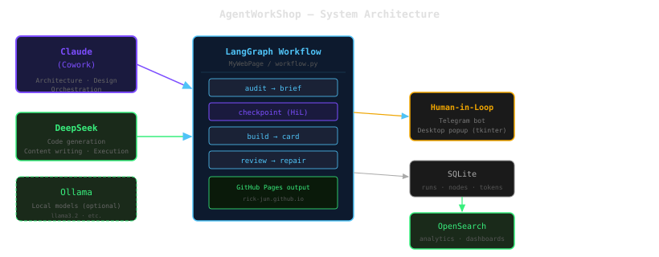
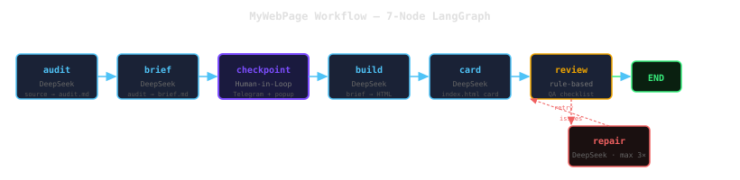

프로젝트 개요
AgentWorkShop은 다수의 AI 프로바이더를 조율하는 개인 멀티에이전트 자동화 워크스페이스입니다. 현재 활성 프로젝트인 MyWebPage는 소스 코드 폴더를 입력받아 기술 감사, 마케팅 브리프 작성, HTML 포트폴리오 페이지 생성까지의 전 과정을 자동화합니다. 사람의 판단이 필요한 지점에는 Telegram과 데스크탑 팝업을 통한 Human-in-the-Loop 체크포인트가 삽입됩니다.
2계층 에이전트 모델
Claude(Cowork)가 아키텍처 설계·코드 리뷰·오케스트레이션을 담당하고, DeepSeek이 코드 생성·콘텐츠 작성 등 반복 실행 작업을 처리합니다. Ollama(로컬 모델)는 선택적으로 활용됩니다.
시스템 아키텍처
워크플로우 전체는 LangGraph StateGraph로 구현됩니다. 각 노드는 @timed_node 데코레이터로 래핑되어 실행 시간과 성공/실패 상태가 SQLite에 자동 기록됩니다. 예외 발생 시 오류 정보를 Telegram과 팝업으로 전송하고, retry / skip / abort 명령을 기다립니다.

전체 시스템 아키텍처 — Claude · DeepSeek · LangGraph · OpenSearch
MyWebPage 워크플로우
소스 폴더 하나를 입력하면 7개 노드로 구성된 LangGraph 그래프가 순차 실행됩니다. audit 노드가 소스 파일을 분석해 기술 감사 문서를 작성하고, brief 노드가 이를 마케팅 브리프로 변환합니다. checkpoint에서 사람이 브리프를 검토하고, 피드백을 주면 브리프를 재생성합니다. 이후 build → card → review → repair 순서로 HTML이 생성·검증·자동 수정됩니다.

7-노드 LangGraph 워크플로우 — 자동 수리 루프 포함
python projects/MyWebPage/workflow.py --slug visual-ai --name VisualAI python projects/MyWebPage/workflow.py --slug visual-ai --name VisualAI --skip-to build
Human-in-the-Loop 체크포인트
체크포인트 노드는 브리프를 Telegram으로 전송하는 동시에 Windows 데스크탑에 tkinter 팝업을 표시합니다. 두 채널이 병렬로 대기하며 먼저 응답한 채널이 우선권을 갖습니다. yes 응답 시 빌드를 진행하고, no는 워크플로우를 중단합니다. 그 외 자유 텍스트는 피드백으로 처리해 브리프를 재생성합니다(최대 3회). 노드 실행 중 예외 발생 시에도 동일한 채널로 오류 정보를 전송하고 retry / skip / abort 명령을 기다립니다.
승인 채널
Telegram 봇 + Windows tkinter 팝업 동시 대기. 먼저 도착한 응답이 팝업을 닫고 Telegram에 확인 메시지를 전송합니다.
피드백 루프
거절 응답이 아닌 자유 텍스트는 브리프 재생성 지시로 처리됩니다. DeepSeek이 원본 감사 문서와 피드백을 함께 참조해 브리프를 개선합니다.
이미지 추출 및 SVG 다이어그램
각 프로젝트의 Documents/ 폴더에서 PPTX, DOCX, PDF에 내장된 이미지를 자동 추출합니다(python-pptx, python-docx, pymupdf 활용). 20KB 미만의 아이콘은 필터링되며 실제 스크린샷만 포트폴리오 페이지에 포함됩니다. 이미지가 없는 프로젝트의 경우 DeepSeek이 인라인 SVG 아키텍처 다이어그램을 직접 생성합니다.
관찰 가능성 — SQLite + OpenSearch
워크플로우 실행 중 모든 메트릭은 로컬 SQLite에 기록됩니다(workflow_runs, node_executions, token_usage 3개 테이블). 실행 완료 후 os_pusher.py가 SQLite 데이터와 생성된 감사·브리프 텍스트를 OpenSearch로 푸시합니다. 4개 인덱스(agent-runs-*, agent-nodes-*, agent-tokens-*, agent-states-*)에 월별로 축적되며 Dashboards를 통해 프로젝트별 비용, 노드 성능, 토큰 사용량을 분석할 수 있습니다.
| 인덱스 | 내용 | 활용 |
|---|---|---|
agent-runs-* | 런 요약 (비용 합산 포함) | 프로젝트별 총 비용 추이 |
agent-nodes-* | 노드별 실행 시간·상태 | 병목 노드 분석 |
agent-tokens-* | LLM 호출별 토큰·비용 | 모델별 비용 분포 |
agent-states-* | 감사·브리프 전문 텍스트 | 전문 검색 · 향후 k-NN |